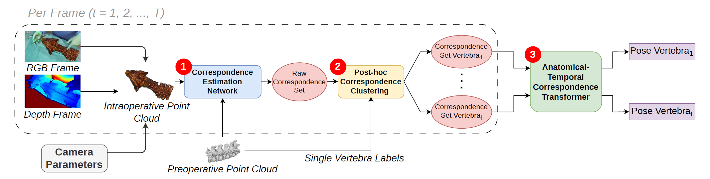
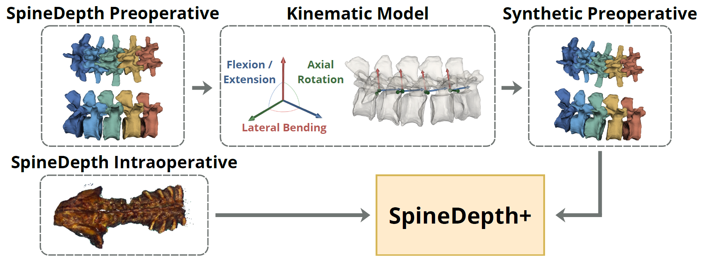

Background and objective:
Markerless RGB-D-based registration offers a promising alternative
to conventional image-guided spine surgery by avoiding fiducial markers and radiation intensive intraoperative imaging. However, accurate vertebral registration remains challenging due to partial anatomical visibility, occlusions, cross-modal discrepancies between preoperative models and intraoperative observations, and spinal motion. Existing approaches estimate vertebral pose from each frame independently, without exploiting the anatomical and temporal context available across vertebral levels and consecutive frames.
Methods:
We propose AT-Pose (Anatomical-Temporal Pose), a markerless framework for piecewise spinal registration from RGB-D video streams. The framework first extracts dense correspondences between the preoperative anatomy and the intraoperative observations, then partitions them into vertebra-specific groups through a novel Post-hoc Correspondence Clustering strategy. To estimate vertebral pose, we introduce a novel Anatomical-Temporal Correspondence Transformer that refines these vertebra-specific correspondences by jointly modeling anatomical relationships across vertebral levels and temporal consistency across consecutive frames.
Results:
We evaluated AT-Pose on SpineDepth and our newly introduced extension featuring kinematic-chain-constrained spinal deformations (SpineDepth+). On both datasets, our framework achieves state-of-the-art performance, consistently outperforming existing rigid and piecewise registration methods while maintaining real-time inference. Ablation experiments demonstrate that modeling both anatomical and temporal context contributes to the observed performance gains.
Conclusions:
AT-Pose demonstrates that incorporating anatomical and temporal context into correspondence-based registration enables highly accurate markerless vertebral pose estimation under challenging surgical conditions. These findings establish anatomical and temporal context modeling at the correspondence level as a promising direction for markerless image-guided spine surgery.

The pipeline processes the intraoperative stream frame-by-frame at each timestep t through three main stages:
(1) Correspondence Estimation: a pretrained network matches the intraoperative RGB-D data with the preoperative point cloud to generate a raw set of correspondences.
(2) Post-hoc Correspondence Clustering: splits the raw correspondences set into vertebra-specific subsets using preoperative anatomical labels.
(3) Anatomical-Temporal Correspondence Transformer & Pose Estimation: the clustered subsets are processed in parallel, leveraging anatomical and temporal attention, then the final individual rigid pose of each vertebra is regressed.

SpineDepth preoperative models are synthetically deformed through a kinematic-chain-based model and combined with the original intraoperative RGB-D sequences, introducing preoperative-to-intraoperative anatomical variability for evaluation of markerless vertebral registration. On the right, a visualization of the kinematic chain model in action.
@article{
}